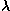

News
News
| Getting Started | Documentation | Glish | Learn More | Programming | Contact Us |
|
| VERSIONID |
News
|
uniform weighting
Universal Time
Unix
URL
user
user interface
UTC
u-v coverage
u-v FITS format
u-v measurement distribution
u-v plane
u-v sampling distribution
u-v taper function
u-v-w co-ordinates
u-v weight function
A dirty image obtained by computing the inverse Fourier transform (FT) of a weighted u-v measurement distribution in which each visibility sample has been weighted in inverse proportion to the local density of the u-v coverage is said to have been computed using uniform weighting. When a radio image is computed via the fast Fourier transform algorithm, uniform weighting may be achieved by computing normalized discrete convolution summations
,
where (u,v) denotes the spatial frequency co-ordinates of a given
u-v grid cell, C is an appropriately chosen
gridding convolution function,
and where the V are the N visibility measurements obtained at positions (u, v) in some neighborhood
of (u,v), the size of which is determined by the support of C.
The uniform weighted image is given by the inverse discrete Fourier transform
of data interpolated and smoothed in this manner, onto the lattice
points of a rectangular grid.
are the N visibility measurements obtained at positions (u, v) in some neighborhood
of (u,v), the size of which is determined by the support of C.
The uniform weighted image is given by the inverse discrete Fourier transform
of data interpolated and smoothed in this manner, onto the lattice
points of a rectangular grid.
So-called natural weighting is achieved by using un-normalized convolution sums, rather than by dividing by N.
Since the density of u-v coverage typically is greater in the inner regions of the u-v plane, an image computed using uniform weighting typically has finer spatial resolution than one computed with natural weighting. With natural weighting, low surface-brightness extended features may be more easily discernible than with uniform weighting. Essentially the same effect can however be achieved with uniform weighting, when accompanied by use of a u-v taper function. D. Briggs (1995, unpublished) has introduced a robustness parameter that may be used to temper uniform weighting in order to optimize the combination of spatial resolution and sensitivity obtained in an image.
(UT): The local mean time of the prime (Greenwich) terrestrial meridian, the same as Greenwich Mean Time (GMT) counted from zero hours beginning at Greenwich mean midnight. Universal Time is defined by the rotation of the Earth and therefore is not perfectly uniform. UT0 is uncorrected. UT1 is corrected for the Chandler wobble. UT2 is corrected both for the Chandler wobble and for seasonal changes in the Earth's rotation rate.
See also UTC, leap second, and the U.S. Naval Observatory's Systems of Time WWW page at http://tycho.usno.navy.mil/systime.html.
An interactive time-sharing computer operating system invented in 1969 by Ken Thompson after Bell Telephone Laboratories left the Multics project. Dennis Ritchie, inventor of C, is considered a co-author of the system.
When Unix was rewritten mainly in C during 1972 - 1974, it became the first source-portable operating system. Unix subsequently evolved in the hands of many different people, becoming a uniquely flexible and developer-friendly environment.
By 1991, Unix was the world's most widely-used multi-user general-purpose operating system. It is now offered by many manufacturers and is the subject of an international standardization effort. Variants include OSF, Version 7, BSD, USG Unix, Xenix, Ultrix, GNU, Linux.
Uniform Resource Locator: (Previously "Universal"). A draft standard for specifying an object on the Internet, such as a file or a newsgroup. URLs are used extensively on the World-Wide-Web and in HTML documents to specify the targeta of hypertext links. For an authoritative URL specification , consult http://www.w3.org/hypertext/WWW/Addressing/Addressing.html.
In object-oriented programming, this term may refer either to an end-user (normally an astronomer for AIPS++) or to a programmer who uses a class.
The aspects of a computer or its software which can be seen and heard by the end-user, and the commands and mechanisms whereby the user communicates with the computer to control its operation and to modify input/output data. A graphical user interface (GUI) relies primarily on bit-mapped graphics and pointers (usually controlled by a mouse) for this interface, whereas a command line interpreter (CLI) relies on text.
Co-ordinated Universal Time. Universal Time co-ordinated with ephemeris time, i.e. the rate is defined relative to atomic clock rate but the epoch is defined relative to Universal Time. UTC is defined such that it differs from International Atomic Time (IAT) by an exact whole number of seconds. The difference can be modified in whole 1-sec increments to keep UTC in agreement with the time defined by the rotation of the Earth to better than 0.9 sec. See also atomic time and leap second.
The support of the u-v sampling distribution. Also see conjugate symmetry.
An extension of the FITS format (originally designed for the interchange of image data) to accommodate radio interferometer visibility data [E. W. Greisen and R. H. Harten, An extension of FITS for groups of small arrays of data, Astron. Astrophys. Suppl. Ser., 44 (1981) 371-374].
In radio interferometry, a linear combination of shifted Dirac  -functions, one at the position in the u-v plane of each visibility
measurement, and each weighted by the visibility measurement obtained
at that location. Denoting the u-v coverage by , the visibility function by
V, and the measured visibility by , the (two-dimensional) u-v measurement
distribution S is given by
-functions, one at the position in the u-v plane of each visibility
measurement, and each weighted by the visibility measurement obtained
at that location. Denoting the u-v coverage by , the visibility function by
V, and the measured visibility by , the (two-dimensional) u-v measurement
distribution S is given by
.
Compare u-v sampling distribution.
This definition may be modified to incorporate two types of weight function, yielding a weighted and/or tapered measurement distribution: see u-v weight function and u-v taper function.
The visibility measurements are not actual samples of V, but rather are error-corrupted samples of a function which represents some sort of local average of the visibility. Various systematic errors affecting the measurements may be corrected by proper calibration---see antenna/i.f. gain and instrumental polarization.
In radio interferometry, the plane at right angles to a direction from which radiation is being received from the sky. The separation between two interferometer elements is measured, projected onto this plane and in wavelengths, by the rectangular co-ordinates u and v. See also u-v-w co-ordinates
In radio interferometry, a linear combination of shifted Dirac -functions, one at the position in the u-v plane of each visibility
measurement. Sometimes termed u-v transfer
function. Also see beam.
Denoting the u-v coverage by , the (two-dimensional) u-v sampling
distribution S is given by
.
Occasionally the term u-v sampling distribution is used in the same sense as the term u-v measurement distribution, but this is not to be encouraged.
An even, real-valued weight function (typically, an elliptical Gaussian), smooth and peaked at the origin, which may be incorporated into the definition, above, of u-v measurement distribution or u-v sampling distribution serving to control the spatial resolution of the radio image or the beam; i.e., to enhance the response to extended features in the radio source brightness distribution by giving relatively higher weight to the measurements at short u-v spacings. Compare u-v weight function.
For an interferometer whose equatorial baseline co-ordinates are
b, b, b, the
corresponding u, v and w co-ordinates
when observing a source at hour angle h and declination
in a band centered on wavelength
 are:
A real-valued function which may be incorporated in the definition, above, of u-v measurement distribution or u-v sampling distribution, serving to weight each measurement either according to an estimate of the statistical measurement error, or according to the local density of sampling, or both. Compare u-v taper function and see uniform weighting.
You could now go back to the:
Copyright © 1995,1996,1997,1999,2000 Associated Universities Inc., Washington, D.C.
abridle@nrao.edu, 26 August 1996, 16:14 EDT